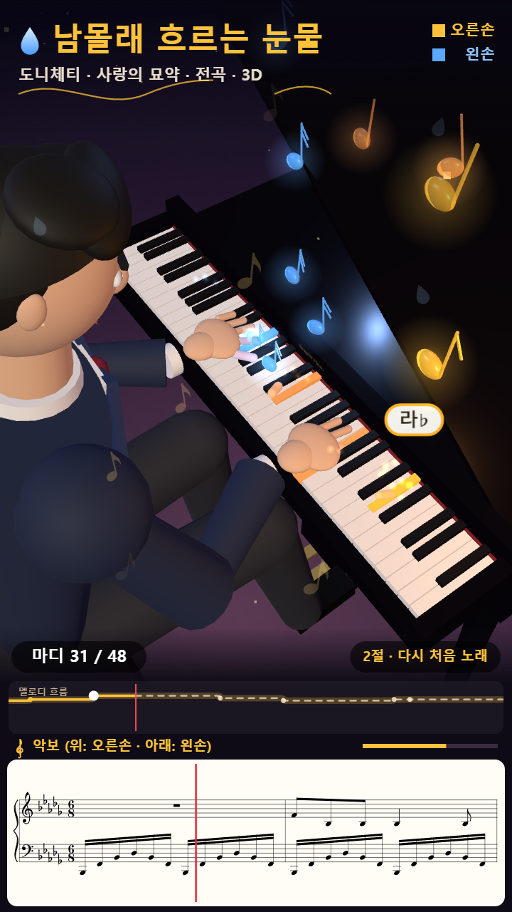
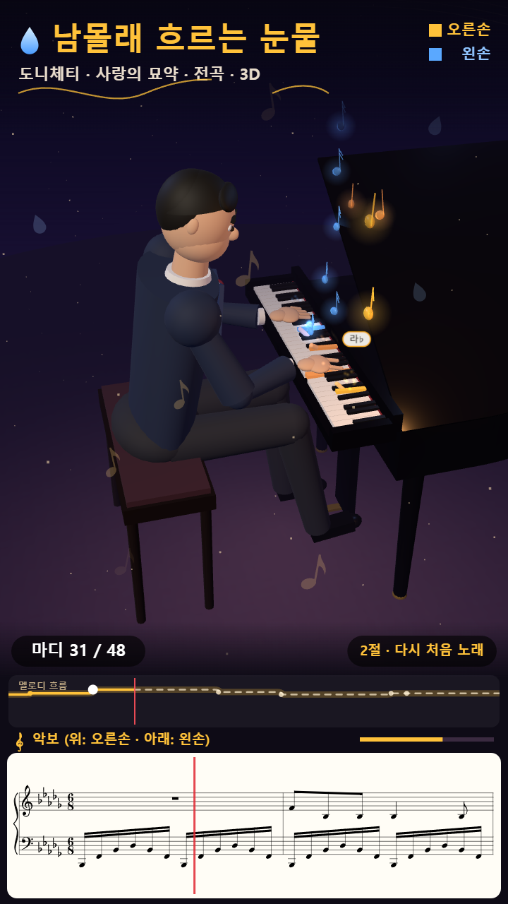
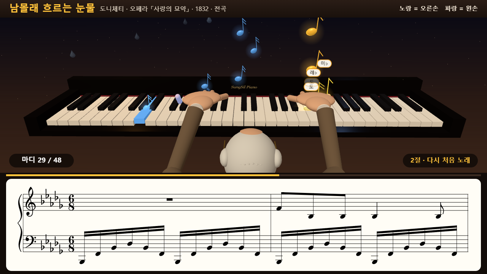

2026년 11월 17일 · 성실피아노 박근성

피아노를 조율하며 오래 지내다 보니, 배우는 분들이 가장 어려워하는 것이 악보의 음표가 건반 어디인지 바로 떠올리는 일이라는 걸 압니다. 그래서 도니체티의 오페라 「사랑의 묘약」에 나오는 「남몰래 흐르는 눈물」을, 음표가 하늘에서 내려와 건반에 톡 닿는 영상으로 만들어 보았습니다.
음표가 닿는 순간 그 건반이 눌리고, 손가락도 같은 건반을 누르고, 아래 악보에서는 빨간 선이 지금 치는 음표를 따라갑니다. 악보 · 건반 · 손가락이 한 번에 맞춰지도록 하는 것이 이번 작업의 목표였습니다.
그림을 누르면 바로 연주 화면이 열립니다. ▶ 재생을 누르면 피아노 소리를 준비하느라 30초~1분쯤 기다린 뒤 시작해요.

🎹 1차 · 옆모습 전신그랜드 피아노 앞에 앉은 연주자 전체 모습
💧 가로 화면뒤에서 본 두 손과 건반, 넓은 악보「남몰래 흐르는 눈물(Una furtiva lagrima)」은 1832년 도니체티가 쓴 오페라 「사랑의 묘약」 2막에서 시골 청년 네모리노가 부르는 노래입니다. 사랑하는 아디나의 눈에 맺힌 눈물을 보고 "그녀도 나를 사랑하는구나" 하고 깨닫는 장면이에요. 느린 6/8박자, 어두운 내림나단조로 시작해 마지막에 밝은 내림나장조로 바뀌는 부분이 가장 아름답습니다.
천천히 따라 치며 배우고 싶은 분은 남몰래 흐르는 눈물 피아노 교실에서 쉬운 악보와 12단계 레슨으로 연습할 수 있습니다.